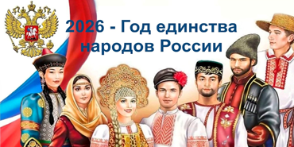
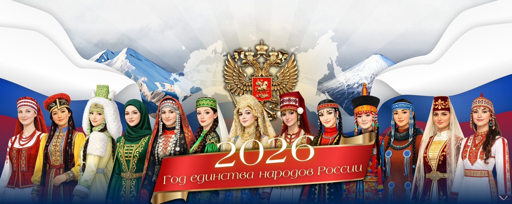
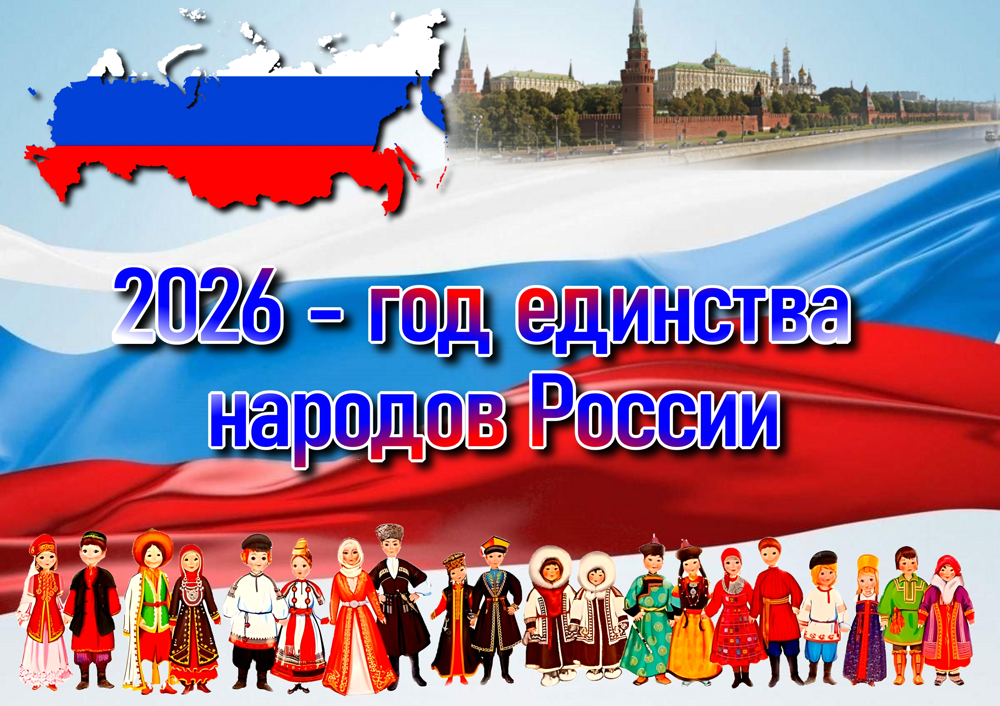

Регион, где проживают представители 160 народов, станет одной из ключевых площадок реализации инициатив...

Дворец молодёжи как флагман дополнительного образования региона включил в программу мероприятий на 2026-й события...
«Для Дворца молодёжи, который исторически является точкой притяжения... Важно, чтобы каждый ребёнок и подросток чувствовал: его голос важен...»
– Александр Слизько, директор Дворца молодёжи.
